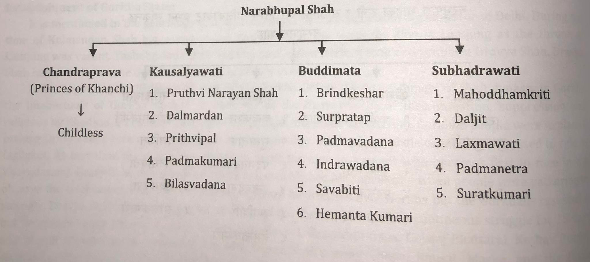

Modern History of Nepal
Subject: Social Studies

Overview
Modern History of Nepal
Modern Period
1768 AD through the present (or 1825 BS) gave Nepal's political history dates back to 1825 BS (1768 AD). The period from that point till the present is known as modern Nepal. It began when Shah Dynasty king Prithvi Narayan Shah seized Kantipur in 1825 BS and moved the capital of Nepal to Kathamandu. "Mera sana dukhale arjya muluk hoina, char jat chhattis varnako phoolbari ho Sabailai chetana bhaya" and the message of uniformity were said by the founder of modern history and geography, Prithvi Narayan Shah. Prithvi Narayan Shah is regarded as the campaign's newcomer. From the Nuwakot triumph in 1801 BS (1744 AD) through the Sugauli treaty in 1873 BS, it had taken 73 years to unite minor and separated kingdoms (1816 AD). After unification, Nepal transitioned from the Shah, Rana, Panchayat, and multiparty constitutional monarchy system to a free, independent, unassailable, sovereign, secular, inclusive, democratic, and socialism-oriented federal democratic republican state. The brief history of Nepal's modern era is presented below.
Establishment of Gorkha State
The genealogy states that Kulmandan received the title Shah from the Delhin ruler. The throne of Lamjung was empty during the reign of Kulmandan Shah, thus his youngest son Yashobrahma was appointed king. Yashobrahma Shah has two sons Narhari Shah the oldest, and Dravya Shah the youngest. The Gorkha state was founded by Dravya Shah after his victory.
Gorkha was initially ruled by the Khadkas. The intelligentsia of Gorkha aspired to overthrow the Khadkas before the Shah dynasty was established because of the ethnic discrimination, religious repression, and other practices that they engaged in. Dravya Shah also grew the relationship. The goal of the Gorkhali people was to impress Dravya Shah with his audacious personality. Ghale known as Gurungs ruled Ligligkot during the time. There was a system in place at the time that awarded the title of king to the person who finished first in the Vijayadasami race. As people gathered to witness the festivities, Dravy Shah launched an unexpected attack and declared his dominance. He immediately launched an offensive over Gorkha after taking Ligligkot, but the Gorkhalis fiercely repulsed it. Dravya Shah left Ligligkot after fighting for 15 days straight without success, but his zeal was stoked by Bhagirath Panta, Ganesh Pandey, Sarveshwor Khanal, Gangaram Rana, Gajajaj Bhattarai, Keshav Bohora, and Murali Khawas. Thapa, Bhusal, Maske, and the Ranas, members of Draya Shah's army, surrounded and besieged the palace of the Gorkha monarch. The Dravya Shah handed the Khadka king his martyrdom. When Dravya Shah ruled Gorkha in 1616 B.S., the region became known as the Shah Dyanasty (1559 AD).
Ram Shah
Ram Shah, who reigned over Gorkha from 1663 to 1690 BS, was the brother of Chhatra Shah and the grandson of Dravya Shah, the founder of the Gorkha state. He was an adept reformer and ruler. He helped Gorkha develop a good culture. He brought the Mana, Pathi, Muri, Dhak, and Taraju system. He introduced the "6 Ghar Thar" system to Bohora, Panta, Aryal, Khanal, and Pandey. To Aryal, Khanal, and Mishra, he appointed Purohit as a Rajguru. In order to prevent the use of interest at random, he introduced a system that limited the amount of interest that could be taken at 10% in cash and 25% in commodities. He developed the well and canal's methodical use. He made a call to the Lalitpur-born 24 Kothi Mahajan, a skillful craftsman who had contributed to the growth of Gorkha's trade. He rose to prominence as the monarch of justice. He was a very good judge of justice. He was formerly admired by the kings of the nearby kingdoms. They used to send cases they couldn't resolve to Ram Shah. Thus, the proverb "Nyaya napae Gorkha janu" gained notoriety.
Kings before Prithvinarayan shah
| S.N. | Kings | Tenure (BS) |
| 1. | Dravy Shah | 1616-1627 |
| 2. | Purandar Shah | 1627-1662 |
| 3. | Chhatra Shah | 1662-1663 |
| 4. | Ram Shah | 1663-1690 |
| 5. | Dambar Shah | 1690-1702 |
| 6. | Krishna Shah | 1702-1718 |
| 7. | Rudra Shah | 1718-1730 |
| 8. | Prithvipati Shah | 1730-1773 |
| 9. | Naebhupal Shah | 1773-1799 |
Source: Department of Information & Communication, Nepal Parichaya
The image below helps to explain the queens and kids of Nabhupal Shah:

Main Leaders of Unification of Nepal
Only after the Gorkha state, which was more organized and powerful at the time and successfully started a unification effort, were the Sen state of the east, the Malla state of the Kathmandu valley, and the Baise and Chaubise States founded. Even if some kingdoms were more powerful than Gorkha, "Guhar yuge rajniti" made them less powerful. Gorkha has established diplomatic principles early on. Prithvi Narayan Shah, Ram Shah, Dravya Shah, and other honorable kings governed this state. Although Nepal's unity was begun in the Middle Ages, modern Nepal was not fully realized until much later.
Prithvi Narayan Shah (Tenure 1799-1831BS)
In contemporary Nepal, Prithvi Narayan Shah occupied a significant position. He is credited with founding modern Nepal. The middle wife of Gorkha Narbhupal Shah, who was seven months pregnant, gave birth to Prithvi Naryan Shah, who was the king's oldest son. He was Poush 27 in Gorkha in 1779. Brid Keshar Shah, the third wife of Narbhupal Shah Buddhimata, was born after three months since the birth of Prithvi Narayan Shah after a full 10-month pregnancy. After a disagreement over who would be the elder—the person who was born or who was in the womb first—it was decided that the person who came into contact with the earth first would be the elder. However, as soon as Brin Keshar passed away, there was no chance of escalating the same conflict once more.
His senior mother Chandra Prabha was responsible for raising Prithvi Narayan Shah. Narbhupal Shah, the ruler of Gorkha, wished to advance toward Nuwakot. So, in 1794 BS, he arranged for Prithvi Narayan Shah to wed Hemkarna Sen, the daughter of the monarch of Makawanpur, reasoning that it would be simpler to defeat Nuwakot, useful to reach the Kathmandu valley, and would provide ample sleep. They sought Chandrahar's wedding ring and the elephant trunk. Hemkarna Sen said fiercely, "The king of Gorkha is the one who forced you to provide dowry," and Prithvi Narayan Shah departed without saying goodbye formally. Later, Prithvi Narayan Shah wed the Rajput daughter of Kashi Narendra Laxmi in a second marriage.Hemkarna Sen contacted to ask for her daughter in Los Angeles after one year of marriage, and Prithvi Narayan Shah responded by traveling to Makawanpur. At the same time, Prithvi Narayan Shah traveled to Chandragiri with his 18 courtiers to see Kathmandu from the Rapti River's bank. He devised a strategy to triumph over the valley after becoming captivated to it.
Following the passing of Narbhupal Shah in 1799 Chaitra, Prithvi Narayan Shah ascended to the throne. He was a regal, courageous, and visionary king. The split kingdoms were beginning to be united under Prithvi Narayan Shah. The significant accomplishments and activities he performed throughout the unification campaign are listed below.
- Treaty with Lamjung
Prior to attacking over the Kathmandu Valley, Prithvi Narayan Shah spoke with his maternal uncle Uddhot Sen (prince of Palpa). Uddhot Sen portrayed Gorkha as the snake, the valley as the frog, and Lamjung as the garud. He advised staying clear from Garud while the snake attacked the frog. Prithvi Narayan Shah signed a treaty with Lamjung in 1796 Magh (1739 January), following his suggestion to do so, and then attacked the Kathmandu Valley. According to this agreement, all parties were disassociated from one another, pledged not to attack over Tanahu, and agreed not to block Gorkha's movement toward the east when Lamjung or another state attacked one of them.
- Friendly Relation with Bhaktapur
The Kathmandu valley's Malla states of the time did not get along well. The invasion on the Kathmandu Valley was successful because Prithvi Narayan Shah was able to preserve cordial ties with the neighboring enemy kingdoms. He managed Miteri relations with Bir Narsingh Malla, the son of Ranjit Malla, king of Bhaktapur, in order to maintain friendly relations with the subsequent neighboring state in 1798 BS (1741 AD).
- Attack over Nuwakot and Victory
In 1743 AD, Prithvi Narayan Shah attacked over Nuwakot. Nuwakot was at that time a vassal state of King Jaya Prakash Malla of Kathmandu. Given that Nuwakot was better equipped with modern weapons than Gorkhalis, the attack there was unsuccessful. On September 25, 1744 AD, the Gorkha attacked Nuwakot for the second time and captured it. They attacked from two positions at the summit of Nuwakot Mahamandap. After that, Prithvi Narayan Shah defeated Belkot.
- Attempt to Blockade over Valley
Before launching an attack directly on the valley, an effort was made to completely encircle it. Gorkha had to deal with the kings of Lamjung and the Kathmandu valley at that time. When the blockade from the north, west, and south was practically successful, it was required to block from the east. In order to do it, we defeated the seven states of Dhulikhel, Khadpu, Chaukot, Panauti, Banepa, Nala, and Sanga, among others. On November 2nd, Pharpin became a warless subject of Gorkha. The Kathmandu Valley was now now encircled on the east. By enclosing the Kathmandu Valley from all sides, Prithvi Narayan Shah effectively outlawed the flow of salt, cotton, food, and other supplies to the valley.
- War of Sirhanchowk Gadi
In May 1755, the combined force of the Chaubise states assaulted the Gorkha town of Sirhanchowk as it crossed the Chepe River. To inspect for intruders, the Gorkhali army under Kalu Pandey's leadership proceeded there. Both forces were engaged in a bloody battle. There were a lot of casualties. Finally, the conflict was won by Gorkha.
- Treaty Between Kathmandu and Gorkha
Despite the fact that Gorkha shared control of the trade route with Tibet's Kurung and Kutti, it did not really gain from it. In order to resolve the conflict between the monarchs of the valley, a contract with Kathmandu was required. Therefore, a convention was established with Kathmandu in 1758 AD to divide the proceeds from commerce with Tibet between the two governments.
- Victory over Makawanpur
The Sultan of Delhi attacked over Chittaud of India at the time that Gorkha defeated Makawanpur in 1819 Bhadra 9 night. Finally, the Rajput king conceded defeat and took his remnant forces to the Himalayan caverns.
- Second attacked of Chaubise States
Digbandhan Sen, the ruler of Makawanpur, was imprisoned in Gorkha. When an economic embargo caused a severe crisis in the Kathmandu valley, the Chaubise states banded together to resist Gorkha. The combined force of the Chaubise states attacked over the Gorkha-held towns of Harni, Bhirkot, Dhulakot, and Dwaurali, among others. The unified Gorkhali force, which had been relocated to launch a counterattack, was too strong for the Chaubise nations. They left the battlefield and fled.
- Victory over Kritipur
After taking Pharping, Bode, and Khokana in 1757 AD, Gorkhali forces launched an offensive over Kritipur. The men of Gorkhali suffered a crushing loss as a result of a joint counterattack by Jaya Prakash Malla's forces and the residents of Kritipur. In that conflict, Kalu Pandey achieved martyrdom. Jiban Thapa and Lata Khatri, two courageous Gorkhali soldiers, died in the conflict. Prithvi Narayan Shah's life could not be saved since it was too tough. Following that, Gorkha defeated Makawanpur in 1819 Bhadra night. The onslaught of the Muslim troops of Gurgin Khan was repulsed by Prithvi Barayan Shah, which heightened the excitement within the Gorkali army. From the Muslim army, some weapons and firearms were also taken. Under the direction of Surpratap Shah, Gorkhali 4 troops attacked Kritipur for the second time in 1821. In this conflict, Surpratap Shah lost an eye. Daljit Shah suffered an injury. Numerous Gorkhali warriors died. Gorkhali soldiers fled to Dahachowk to save them. In 1822, Chaitra 3 Gorkha attacked Kritipur suddenly and won.
- Victory over Kathmandu Valley
Sunday is Bhadra Shukla Chaturdasi (Indrajatra) Following Prithvi Narayan Shah's victory over Kritipur, Gorkhali forces launched their offensive against Kathmandu. Bhimsensthan, Tundikhel, and Nardevi conquered it in 1825 from three different locations.
- Victory over Lalitpur
On the road to capturing Patan, Prithvi Narayan Shah dispatched Shree Harsha Panta as an envoy. After the Pradhans of Patan submitted and recognized his reign, Gorkhali forces captured Lalitpur on October 6, 1768.
- Victory over Bhaktapur
Along with the monarch of Bhaktapur, Ranjit Malla, the rulers of Kathmandu, Lalitpur, and Tej Narshingh Malla visited the asylum. In BS 1826 Kattik shukla Dwadasi, Prithvi Narayan Shah asked Ranjit Malla to send them back, but he refused. As a result, Gorkhali forces overran Bhaktapur. Finally, the Kathmandu Valley's three states abdicated. The Kunwar Chhetris of Kaski and Lamjung participated most actively in Prithvi Narayan Shah's winning campaign against the Koshi area of Nepal.
Ram Krishna Kunwar was sent to Pyuthan by Prithvi Narayan Shah after his triumph over the eastern area. At the same time Ramkrishna Kunwar passed away on March 21, 1771 AD, he was getting ready to build an arsenal there. After Ramkrishna Kunwar passed away, his 18-year-old son Ranjit Kunwar was appointed as an officer in the recently conquered state of Jumla. He was elevated to Kaji status among Nepal's four Kajis for his accomplishments in preserving the country's stability. Bal Narsingh Kunwar, Balram Kunwar, and Rewanta Kunwar were the three sons of Ranjit Kunwar.Bal Narshingh Kunwar was appointed Kaji as a result of the murder of Ran Bahadur Shah by Sher Bahadur Shah, and his successors now have his title and position. Kaji Bal Narshingh Kunwar passed away on December 24 of that year.
The divine advice that Prithvi Narayan Shah gave to his courtiers and assistants during his final years is still a useful manual for constructing a country. He emphasized the following: "Maintain good relations with the people of the south and the north; bribery givers and takers are both enemies of the country; wear domestic clothing; assist in showing the sample to the person who knows how to weave the clothing; do not allow foreign moneylenders to cross Gaur and Parsa; Nepal is a common garden of all castes." When assessing his personality, he can be seen as a respectable monarch, a courageous warrior, a good army organizer, and a forward-thinking leader of his era. While Nepal was being unified and managed, Prithvi Narayan Shah passed away in 1831 Magh 1 BS in Devighat of Trishuli (Nuwakot) at the age of 52.
Rajendra Laxmi: (Regency from 1843 BS to 1843 BS)
Pratapsingh Shah, the eldest son of Prithvi Narayan Shah, became the new monarch of Nepal. Chitwan was taken by the Gorkhali army during his reign. Ran Bahadur Shah, his two and a half year old son, succeeded him as king after he passed away at the age of 26 from smallpox disease in 1834 B.S. As king's representative in Nepal, the widowed queen of Pratapsingh Shah Rajendra Laxmi governed. Rajendra Laxmi and her brother-in-law jointly control the nation at first. But because of the groupthink of several self-centered courtiers, a disagreement between them arose. Bahadur Shah left for Betiya because he was unable to remain in Nepal. The re-unification of the Chaubise nations was sparked by internal strife between in-law siblings. Together, the kings of Lamjung Birmardan, Parbat, Kritibam Malla, Mukunda Sen of Palpa, and Tanahu, Harkumar Panta Sen, began to formulate a strategy to overthrow Gorkha. Fear led Kaski to join this group as well. Aware of the situation, Rajendra Laxmi sought advice from courtiers before ordering the army to attack Lamjung's territory of Simjung. Gorkhali was vanquished. To defeat Palpa, Rajendra Laxmi dispatched the army under the command of Sworup Singh Karki. Palpa Tansen's capital city was taken. The team defeated Painyu. Makai Dada received a reply. Against Kaski and Tanahu, Rajendra Laxmi prevailed. While also battling illness, Rajendra Laxmi was concerned about her son. In Ran Bahadur Shah's Bratabandha, his brother-in-law Bahadur Shah was summoned. But soon after, Bratabandha Bahadur Shah was detained due to a royal plot. He cleaved Banshraj Pandey, his assistant. Rajendra Laxmi, a courageous woman from Nepal, passed away in 1843 Shrawan 2 BS.
Bahadur Shah: (Regency from 1843 BS to 1851 BS)
As soon as Rajendra Laxmi, the royal mother, passed away in 1843 Aashad, Bahadur Shah was imprisoned at Pharping. When Rajendra Laxmi passed away, the young king Ran Bahadur Shah was only ten years old. The senior courtiers Daljit Shah, Abhimansingh Basnet, and other Bhardars imprisoned Bahadur Shah on the eleventh day after Rajendra Laxmi's passing. After the passing of the sister-in-law, brother-in-law Bahadur Shah assumed full control of the government. Bahadur Shah's reign is seen as crucial to Nepal's unification. By marrying the daughter of Mahadatta Sen, the monarch of Palpa, who was at the time a very prominent figure, he turned Palpa into a neutral state during the unification crisis. Arghakhanchi, Gulmi, Parbat, Pyuthan, Dang, Doti, and Bajhang were combined by him. BS overcame the nation's capital, Kumau Almoda, in 1847. Within a very short period of time, Gadwal accepted the Rolpa and Dhurkot invasions of Nepal. Nepali soldiers defeated Dailekh and Achham. Up till Sikkim, Nepali forces launched an assault, taking Tista to the east. The region between the Mechi and the Tista rivers was also incorporated into the great Nepal. A dispute over money and border trade during the process of unification led to the start of the conflict between Nepal and Tibet in 1845 BS. The Betrwati Treaty of 1849 BS provided a solution to this issue.
Ran Bahadur Shah, who was 19 years old at the time, began to reign on his own with the assistance of several courtiers in 1851 BS after being encouraged to do so by some Bhardars who were against Bahadur Shah. BS Bahadur Shah was jailed in 1853 after being charged with misusing royal funds. Bahadur Shah was very likely put to death in a neck trap on Saturday, Ashadh 14, 1854. However, his funeral was conducted that very evening while faking a death. Bahadur Shah, a genuinely honorable, patriotic, and visionary ruler, made a priceless, incomparable contribution to the unification of Nepal.
Ran Bahadur Shah
Rajendra Laxmi and Bahadur Shah served as the regents of Napal during the reign of Ran Bahadur Shah until the last ashadh of 1843 and till 1851, respectively. Nepal's political climate has been extremely tense for some time. It was referred to as mobocracy by historians. Due to an uptick in internal strife, his own brother Sher Bahadur Shah murdered him in 1863 BS. Even so, there is still controversy about this murder. Mukhtiyar Bhimsen Thapa then rose to prominence. He carried out his plan and the unification process advanced.
Bhimsen Thapa
The politics and reunification of Nepal were significantly influenced by Bhimsen Thapa. The heroic son of Nepal, Bhimsen Thapa, was born in the Gorkha village of Borlang in 1832 Shrawn 9 BS. Bhimsen Thapa, the son of Kaji Amarsingh Thapa, ascended to the position of commander in chief at a young age, became Mukhtiyar, and governed the nation for 31 years. He significantly contributed to the modernisation of the Nepali army, implemented the passport system, and established himself as a fierce opponent of imperialism. Bhimsen and King Ran Bahadur were of the same age. Ma marya bhane muluk dubnya chhaina Bhimsen marya bhane muluk dubnya chha, Ran Bahadur had once uttered. This proverb makes clear the significance of Bhimsen Thapa.
In response to this occurrence, Bhimsen Thapa seized Palpa and incorporated it into the kingdom of Nepal. He also accused Palpali King Prithvipal of taking part in the murder of Ran Bahadur Shah. British forces raided Nepal in 1871 BC under the leadership of Bhimsen Thapa, igniting five separate ancient battles. In the fight, Nepalese shown outstanding gallantry. However, Nepal was unable to fight against one of the most potent British armies in the world, and the issue was resolved with the Sugauli Treaty in 1873 Falgun/Chaitra BS (1816 March 3). The territory that Nepal had to give Kanchanpur across the Terai of Banke, the Mechi River, and the Mahakali was required under the treaty. But in order to appease the British, Junga Bahadur later made the decision to restore the land from Banke to Kanchanpur in 1916 BS. Dharahara and Sundhara were constructed by him.
The British ambassador Hugsan was not pleased with Bhimsen Thapa's anti-British stance, and Ranjung Pandey was looking for a way to exact revenge on Bhimsen Thapa for killing his father Damother Pandey. In such circumstances, the plot of elder queen Samrajyalaxmi Devi, Ranjung Pandey, and British envoy Hugsan in 1894 BS led to Bhimsen Thapa's overthrow (1837 AD). In 1896 Shrawan 7, while in prison due to Bhardari groupism and a royal intrigue, he attempted suicide. But he did not pass away right away. He was restless for nine days until passing away on Sharawan 17.
Rana Regime Periods (1903 BS to 2007 BS)
The Rise of Jung Bahadur
On June 18, 1817 A.D., Jung Bahadur was conceived in the womb of a young Chittor (Rajasthan) woman and delivered in his maternal home of Boling, India. Although Nawaran's name was Birnar Singh, his maternal uncle Mathwar Singh began referring to him as Junge because of his aggressive disposition. Balnarsingh Kunwar was a descendent of Ram Singh who had sought refuge in the Himalayan province of Nepal. They are deeply in debt as a result of all the improper playing practices. He fled Kathmandu without paying his debt. Attempting to sell an elephant but failing. went to Benares' Rajghat. There, he had three weddings with spouses. King Rajendra Bir Bikram was impressed by the boldness and valor displayed by the man when they went hunting together and appointed him captain of the artillery. Later, he was appointed an officer of Kumarichowk and Athpahriya.
From the beginning, it incensed the Pandeys. When there were severe floods, the then-crown prince Surendra once gave him the command to jump into the river. He caught a young man named Dhamm Ham Flay by grabbing a live tiger while riding a horse. He also grabbed a fox, snatched an elephant that was on fire, and burst a dwarf well that had been dry for 12 years. Balanar Singh worked very hard to promote Jung Bahadur to the position of King's bodyguard in 1998 Ashoj BS.He got the chance to stay in the palace because the elephant was thrown into it, giving him the chance to interact with everyone. With the help of the same Susare who recommended what kind of contact would be advantageous to the palace, Jung Bahadur Kumari was able to become Kaji of Kumarichowk in 1998. Currently, Jung Bahadur Kunwar has managed to get to the position of authority in Nepal despite being a simple man. After Samrajyalaxmi's passing and during Mathwar Singh's stint as prime minister, his destiny became apparent. When his uncle realized that his dream would not be realized, he killed the patriarch Mathwar Singh on the king and queen's orders. To please the queen, he wished to crown his son Ranendra as king. The temptation to crown his son Ranendra as king, however, was present for King Surendra. After the coup, Jung Bahadur Kunwar assassinated the state. Jung Bahadur rose to prominence following the Bhandarkhal Parva and the Alu Parva, becoming the shree teen of Lamjung and Tanahu.
Reasons for the Rise of the Rana Regime
Since Prithvi Narayan Shah's passing, the kingdom has faced serious issues due to a lack of capable leadership in the royal palace. The reigns of those monarchs lasted 26 years for Pratap Singh, 31 years for Ranbhadur, and 19 years for Giwarnu. It is conceivably royalty. The main causes of the Rana regime's rise are quarrels, mutual factions, and conspiracies between the brother-in-law, the chase of foreign power, and many events that happened simultaneously and incidentally. It is briefly covered below.
Groupism Among the Bhardars and Conspiracy in the Royal Family
In the course of history, assassinating those in positions of authority in the palace is nothing new. There appears to have been a conspiracy and rampant faction-building in the palace following the passing of Prithvi Narayan Shah. The Thapa, Pandey, Basnet, Chautariya, Brahmin, etc., formed a number of factions within the Bhardars, making the political situation extremely precarious. Conflict among the royal family members grew starting with the reign of Prithvi Narayan. The argument about whether to split the country and leave the king and his siblings alone grew more heated. The fact that the kings were small added to the dispute over his former ruler. The stepdaughter of a polygamous king also had a lot of difficulties. Jung Bahadur profited from the circumstance.
Weak Personality of King Rajendra
King Rajendra Bir Bikram Shah had a fragile disposition and a turbulent mood. Even if he was unable to adequately distinguish between them, he could not reconcile himself with the mischief of the self-centered bureaucrats. He lacked any political acumen. The unfavorable rivalry between the two queens of Rajendra Bir Bikram Shah—the oldest empire Laxmi Devi Shah and Kanchi Rajya Lakshmi Devi Shah—where diverse factions appeared to have crossed extremely sharp lines—was the reason this limit was achieved. Furthermore, granting the younger queen complete power is a grave error. The king should not have allowed Jung Bahadur, his eldest son and crown prince, to rise to power since he was cruel, clever, and opportunistic and was unable to clear up the queen's misunderstanding.
To Be Faithful of the Royal Palace
It is thought that Jang Bahadur's ascent was significant in and of himself. He was a brave, daring man who could change with the times and the situation. He rose to power based on his own merits, and Jang Bahadur's ascent is seen as significant. He has courage, courage. While the queen Samajalakshmi Devi and General Gagan Singh Khawas internally obstructed him, he handled with all the key persons with dignity and discipline, including Raja Rajendra, Prime Minister Fatejung Shah, queen Rajyalakshmi, and General Gagan Singh Khawas. He identified Apu as the Queen's second well-wisher after Gagan Singh, and after Gagan Singh's murder, he seemed to be the only person who could provide the Queen any assurance.
Political instability
Rajya Laxmi Devi Shah, the younger queen, was successful in assuming full power following the death of the oldest queen Samrajya Laxmi Devi Shah in 1841 AD. She wanted to make her son Ranendra Bikram Shah monarch against state tradition in order to accomplish her repulsive ambition of becoming a delegate. Due to his failure to serve her unscrupulous interests, Mathbar Singh Thapa died, and political unrest started to spread. British Resident's Intervention in Nepal's Internal Politics:
The British East India Company, situated in India, kept a wary eye on the palace in Nepal. In addition, the British regarded Jung Bahadur as a respectable individual. Jung Bahadur gained admirers by keeping cordial ties with the British Ambassador at the time, Henry Lawrence. Due to British support for Jung Bahadur's decision to repress active bureaucrats who opposed the British government and install a puppet administration in Nepal, his ascent was inevitable. The British resident at that time became into a political force in Nepal. The Resident was free to inject whatever he wished into Nepali politics. Wherever they stood, they desired to rule. The Englishman's plot was obvious when the monarch personally went to call the British envoy on the eve of Kot Parva because he withheld it till the meeting. By means of Jung Bahadur, they sought to take control of Nepal. As a result, the British continued the Rana regime.
The Kot Massacre
In the violent "Kotaparva" episode in Nepali history on Ashoj 2, 1903 BS, Jung Bahadur killed the patriotic Bhardars, eliminating his rivals and establishing the 104-year-old dictator Jahania's power as prime minister. Additionally, he was successful in getting the title "Shri 3 Maharaj" from Shrawan 1913 BS.
Important Events that Occurred During the Rana Period
- In order to better his links with the British Empress and to investigate the social, economic, political, geographical, and military activities of Britain, Jung Bahadur traveled to Europe in 1906–1907 BS. He introduced the English Education and Civil Code in Nepal after spending a year traveling through Europe.
- Tibet-Nepal War (1912–1913 BS): Due to boundary disputes, the maltreatment of Nepalese citizens in Lhasa, and the expulsion of a Nepalese lawyer from Tibet, there was a war between Nepal and Tibet during the Jung Bahadur period.
- Thapathali Convention
- The Thapathali Treaty was signed between Nepal and Tibet on the third Chaitra (1912 BS) in the Thapathali Durbar. To put an end to the conflict between Nepal and Tibet, the treaty was signed. It was a pact in Nepal's favor. This pact stipulated that Nepal would receive Rs. 10,000 year from the Tibetan administration. The law to maintain Nepalese envoys in Lhasa was also aroused by this treaty.
- Salko Parva 38 The Year of the Year refers to the plot in 1949 to assassinate the then-prime minister Ranodip Singh and his brother Dhir Shamsher. This celebration featured Prince Trilokya, Jagatjung, Subba Homnath Khatiwada, Uttar Dhwaja Khawas, and others. Later, Udhav Dhwaj Khawas started a conspiracy ring, which led to numerous arrests and some fatalities.
- 42 Salko Parva
- The sons of Dheer Samsar seized the death of his own uncle, Ranvedeep Singh. It is known as the 42 Salko Parva since 1942 is when it occurred. The Jang dynasty was overthrown following this event, and the Shamsher family came to power.
- Prachanda Gorkha
- Prachanda Gorkha was founded by Umesh Bikram Shah, Ranganath Sharma, Khadgaman Singh, and Main Bahadur in an effort to overthrow Rana power in the nation. As a distinction was formed between Umesh Bikram and Laxman Prasad, the latter was abducted, expelled, and imprisoned. It's referred to as Prachanda Gorkha Parva. It was essential to the Rana regime's downfall.
- Opening of a library or library was prohibited during the reign of Ranaka. During the reign of Bhim Shamsher, Jogvir Singh, Lakshmi Prasad Devkota, Krishna Prasad Khatiwada, and 3–4 other people wanted to construct a library. For opening a poll before submitting the petition to the prime minister for more than five, everyone was detained. Everyone who was detained was fined Rs. 100/100, but the library could not be opened.
- Praja Parishad
- The founding of Nepal's first political organization, Praja Parishad. It was founded on January 20, 1993 B.S., in Kathmandu. The Rana regime was to be overthrown, and democracy was to be established. Devout forehead, Tank Prasad Acharya, Darshat Chand, Jivan Raj Sharma, and Ram Hari Sharma were among its early members. King Tribhuwan gave the party both material and moral assistance. In addition to the execution of the four evil spirits Dasaratha Chand, Gangalal, Dharmabhakta, and Shukraraj, members of the organization were detained on suspicion of conspiring against Rana.
- Nepali Civil Rights Committee
- This committee, which was established in the Asninir of Raja Lal Kalwar in 1994 BS, sought to raise knowledge among the general people by publishing essays, sermons, and Puranas. Shukraraj Shastri, Gangalal, Muralidhar Sharma, Kedarman Vichit, etc. Shukraj Raj Shastri served as the committee's chairman and was a youth representative.
- Jayatu Sanskriti Movement
- Students at the Royal Sanskrit School in Ranipokhari, Kathmandu, are on strike as part of the Jaitu Sanskriti agitation, which calls for the inclusion of subjects such as geography, history, economics, and politics in the curriculum. It supported Nepal's democratic struggle.
Reforms of Rana Period
The country's social changes, economic growth, and educational awareness were not prioritized under Rana's program. Because they feared that reformist movement in all areas would erode and weaken their control over the country's government, the ranas sought to stifle as many of these efforts at change and reform as they could. However, there were several significant historical reforms under the reign of Rana for a variety of reasons, such as waves of change in the bordering countries, to address the growing public unhappiness, to gain popularity among the populace, and to serve their individual interests. The table below lists the prime ministers of the Rana era along with their most significant contributions. No. 2.6 in Table The rule of Chandra Shamsher during the Rana era is notable for the advancement of education and Juddha Shumsher's industrial vision. Below is a summary of how social, economic, and administrative reforms under the Rana period served their respective purposes.
Social Reforms/Improvements
- In 1910, Jung Bahadur proposed the Muluki Act.
- Slavery and the Sati religion were outlawed by Chandra Shumsher.
- The death penalty was changed to a life sentence by Bhim Shumsher. After schools were established, Dev Shumsher began to print Gorkhapatra.
- In 1910 B.S., formal schooling first commenced.
Economic Reforms
- Through a deal with the British, Jung Bahadur had returned Banke, Bardiya, Kailali, and Kanchanpur after the Indian uprising of 1875 AD.
- Since agriculture is the state's primary source of income, Jung Bahadur categorised the land in Nepal as Aabal, Doyam, Sim, and Chahar in 1934.
- In 1980 B.S., Chandra Shamsher built Nepal's first irrigation canal. Sundari hydropower, Nepal's first hydroelectric project, was constructed.
- The first significant industry in Nepal was established by Juddha Shumsher in Morang.
- Since Bir Shumsher's reign, the government has been making more overt efforts to distribute clean water throughout Kathmandu.
Administrative Reforms
The prime minister (Shri Teen Maharaj) was the supreme and omnipotent monarch during the Rana period. Despite having unrestricted privileges, the Rana period saw some administrative improvements.
- A legislative body called Kausal Addha was founded by Jung Bahadur.
- Ranodip organized the odd method of bribery prevention (humiliating by sticking feather of bird in the body and by beating Jhyali the person is taken round the city).
- Dev Shamsher set regular business hours of 10 a.m. to 5 p.m. the briber's accomplice
- The Khadga Nisan Adda was formed by Chandra Shamsher as the Prime Minister's Office. He built the Public Health Station, Jungi Management Adda, Electricity, Telephone, Population Goswara, and Bintipatra Nixari Adda (Judicial Affairs).
- For the staff, Juddha set up a pension and provident fund.
- The Nepal Government Legal Act, the country's first constitution, was published by Padma Shumsher.
The Major Contributions of the Rana Period's Prime Ministers
| S.N. | Name of the Prime Ministers | Ruling Period | Major Contributions |
| 1. | Junga Bahadur | 1903-1933 | In 1910 B.S., the Mulki Act—which outlined the legal system and criminal laws—was first published. Darbar School was also established. acquire a new nation |
| 2. | Ranodeep | 1933-1942 | A new mechanism for collecting land tax was set up, along with the first calendar publication. |
| 3. | Bir Shumsher | 1942-1957 | The setup of Birhadhara in Kathmandu and Bhadgon, the building of bridges, the founding of the Bir Hospital (1947), the founding of the Bir Library, and the building of Ghantaghar. |
| 4. | Dev Shumsher | 1957-1958 | Gorakhpatra's publication started, the official time was changed to 10 to 5, a government holiday was put up, and language schools were established. |
| 5. | Chandra Shumsher | 1958-1986 | The elimination of the Sati system, the release of the slaves, the first time electricity was made available, and the founding of Tri-Chandra College, the first college. the development of the railway, the creation of the Gorkha Language Publishing Committee, etc. making of a Nepali map. |
| 6. | Bhim Shumsher | 1986-1989 | Customs exemptions for cotton and salt promote the growing of cotton. |
| 7. | Juddha Shumsher | 1989-2002 | Development of domestic industry, building of the high court, fire station, museum, and zoo, as well as the First Bank (Nepal Bank) |
| 8. | Padma Shumsher | 2002-2005 | Kathmandu Municipality is founded; first constitution is published. |
| 9. | Mohan Shumsher | 2005-2008 | Creation of radio, formation of the national economic committee. |
Factors that Led to the Fall of the Rana Regime They kept their family monopoly in Nepal while being at a lower level than His Majesty. Ranas were appointed to major positions in the army, court system, police force, and all other important jobs from the office of Prime Minister or Shri Teen Maharaj. It was astounding and impossibly sudden for the powerful Ranas to crumble in such a manner. The Ranas actually did not fall suddenly. It was built on a foundation of lawlessness, murder, deceit, and conspiracy. The Rana regime began in 1903 when a horrific murder that seemed to be a genocidal horror massacre was injected into the bloodstream. The Rana regime lasted for 104 years before coming to an end in 2007 B.S. Dark reign was another name for Rana rule. The following were the primary causes of the Rana regime's downfall:
- Internal Strife (Conflict)
- Junga Bahadur was unable to plan the horrifying carnage of the Kot festival. As a result, Jang Bahadur recruited his brothers to assist him establish the Rana rule. However, there was a significant upheaval in the Rana family not long after the Jung Bahadur regime was successful in maintaining total control. Due to Junga Badhur's personality, no one dared to object to him, yet he was the target of an inside plan. In his later years of rule, Jang Bahadur himself used to sleep in a different bedroom in secret. Khadga Shumsher, the son of Dhir Shumsher, killed his uncle Ranodip at Bir Shumsher's urging, and Bir Shumsher went on to become prime minister.Dev Shumsher, who succeeded Bir Shumsher as Prime Minister, was likewise deposed by Chandra Shumsher, his own brother. He divided the Ranas into three classes—A, B, and C—and established the restriction that Ranas in the C-class would never be eligible to hold the position of prime minister. Following this, the C-Class ranks revealed themselves to be anti-Rana and prepared to battle the Ranas. After they split up, there was plot and murder inside the Rana family, and they were weak. The Rana rule thus ended as a result of confusion among the Ranas.
- Raising Awareness in Nepalese People
- From the beginning, the Nepalese were against the Ranas. But the people of Nepal were in a terrible situation. The Ranas exploited the economy to the detriment of the populace, which had very poor economic and social standing. The general populace was repressed, exploited, sad, and destitute. The Ranas and their allies were growing wealthy and affluent at the time. While this was going on, young men from Nepal who had been sent to fight for the British government in World Wars I and II returned with fresh perspectives that had been influenced by European civilization, culture, advancement, and reform. Following their delivery of their memoirs to every nook and cranny of the hill, some awareness of Rana was spread in public. Although Tulsimehar Shrestha founded the "Satyacharan Sabha" organization as part of his activism to educate society, it was put under control. A suppression cycle had also been used by Ranas to some reformers, like Madhavraj Joshi of the Arya Samaj, who had previously made an appearance. Because he wrote the novel "Makaiko Kheti," Subba Krishnalal Adhikari received a nine-year prison term.
- Downfall of the British Government from South Asia
- Many nations in Asia, Europe, and Africa were ruled by the British until 1947 (2004 B.S.). British East India Company was particularly responsible for Rana's rule in Nepal. The British provided complete protection for the British. However, once the British had returned, they were encouraged by their ability to quickly drive such strong English out of India. So they would undoubtedly have the ability to drive the Ranas out of Nepal as well. Thus, one of the key factors in the end of Rana authority in Nepal was the reintroduction of English from South Asia, particularly India.
- Contribution of King Tribhuvan
- During that time, King Tribhuvan had shown his support for the Nepalese people in their fight against the anti-regime movement. The kings of Nepal have been engaging in anti-Rana actions ever since the Rana administration began because they have been unhappy with it. About a year after the installation of the Rana monarchy, King Rajendra Bikram, who had gone to Kashi, reenter Nepal with the army to reclaim the lost power, and there was an armed clash at Alau. Instead, he was put in a cell. Later, Trilokya Bikram, the son of King Surendra, also attempted. He also failed, though. King Tribhuvan was ultimately helped by the situation. He used to sneak out from the palace to meet with the revolutionary group, give them counsel, and offer encouragement. King Tribhuvan fled to the Indian Embassy with his family, putting the crown in danger. The Ranas' downfall was also largely attributed to the Indian government's actions against them. Later, in Delhi, India, a tripartite agreement was reached through peaceful means between Rana, the King, and the Nepali Congress, which had spearheaded the 2007 uprising. The Rana era of Nepali history came to an end on Falgun 7, 2007 B.S., and democracy was ushered in.
Democratic Movement 2007
The Ranas had to deal with hostility from the start. Supit Gurung and Lakhan Thapa spoke out against the Ranas. During the reign of Bir Shumsher, Madhav Raj Joshi, who was influenced by the Arya Samaj, established a civil rights committee in Kathmandu and began organizing resistance to Rana rule. Chandra Shumsher caused an exponential rise in public awareness of repression in Nepal, which has persisted ever since. Madhav Raj Joshi received a humiliating sentence of two years in prison. Subba Krishna Lal wrote a book titled "Makai Ko Kheti" during Chandra Shumsher's reign that was meant to be critical of Ranas and show the wretched state of farmers in Nepal. For writing the book, Krishnala received a nine-year prison term, and he passed away in custody. At this time, individuals responsible for founding the Arya branch in Kathmandu received prison terms as well. A fine of Rs 100 was imposed during the time of Bhim Shumsher, who intended to open the library. A group of young people founded the "Prachanda Gorkha" organization during this time. This organization's goal was to overthrow the brutal Rana regime in Nepal, but it was shut down before it could accomplish anything because a Prachanda Gorkha member exposed its secrecy. In order to put a stop to the autocratic Rana rule, Dasharatha Chand, Tanka Prasad Acharya, Ram Hari Sharma, etc. founded the Praja Parisadh under the reign of Juddha Sumsher. When Praja Parisadh began distributing leaflets critical of the Rana government, it was stated that the Rana government would give Rs. 5000 to anyone who could arrest them. The Praja Parisadh members were apprehended by the government. It was agreed to give the defendants life in jail, two months to 18 years in prison, or the death penalty for extortion.
Organized protests against Rana began in 2003 B.S. The Nepali National Congress was started in Calcutta by some young people. The Rana regime's overthrow was another goal of this Congress. Work on the National Congress got underway. It offered assistance to the Biratnagar Jute Mill workers who were on strike. The Satyagraha Movement was begun by the Nepali National Congress because the Ranas disregarded the strike. The Sanskrit school pupils were so moved by this that they also forbade classes using the slogan "Jayatu Sanskritam" from attending. Due to Dilli Raman Regmi's election as leader and Matrika's popularity as their leader, respectively. Another iteration of the Nepali Congress grew in 2005. Conflict occurred inside the National Congress, which led to the formation of the Nepal Prajatantra Congress, a faction-elected political organization. The Rana regime's overthrow was another goal of this Congress. Since many organizations' attempts to fight Ranas were ineffective, a joint political meeting of the Nepali National Congress (Matrika's Party) and the Nepalese Prajatantrik Congress founded a new political party in the month of Chaitra in 2006 B.S. The Nepali Congress inspired the naming of the party.
First and foremost, the Rana regime's peaceful overthrow was the goal of this Congress. But the convention that took place in Bairgania opted to start an armed uprising against the Ranas instead of sticking to its original plan. A big alteration in the situation occurred a few weeks later. King Tribhuvan and his family left the royal palace and sought safety at the Indian Embassy in the city as a show of solidarity for the uprising against Rana authority. After four days, he departed India by plane. The palace was where Gyanendra Bir Bikram Shah was. Gyanendra had just turned 2.5 years old. He was left at the palace for an unknown purpose, and many hypotheses are only offered. The Rana kings were anxious. Gyanendra, the king's grandson, was proclaimed king by the Ranas. The new king's name was used when creating the seal. America, Britain, and India refused to acknowledge the new king. Since Tribhuvan left India, there has been an armed uprising in various regions of Nepal, and the Ranas have lost control of many cities. The Delhi Agreement between King Tribhuvan, Rana, and Nepali Congress was made after the Ranas, who had been defeated, came forward and requested for negotiations under the arbitration of the Indian Government. Successful resolution of the negotiations was achieved. In actuality, Mohan Shumsher and Pandit Jawaharlal Neharu came to an understanding to put an end to the 2007 revolution peacefully. Thus, with the end of Rana rule in Nepal's history, democracy was established on 7 Falgun, 2007 B.S.
Political and Administrative Situation
Due to the presence of medieval dictatorships, nepotism, random hiring of civil servants, unscientific promotion, insufficient, and lack of necessary civil servants with required qualifications, the administrative sector in the country was not strong when the country transitioned to a democratic governance system. Above, the current political landscape and historical political highs and lows of Nepal have been described. The situation in modern administration is briefly described here.
In the past, the king appointed, promoted, moved, and fired all high and low officials. The king's position was evident everywhere when he gave the administrative commands. The king at the time was in charge of both the state and the government due to his personal control. Every action, no matter how small, required the king's royal seal. There was a centralized administration at that time because the king was the source of power and the center of the administration, and because his words were considered to be the law and his command was necessary in every function from the top to the bottom. At the request of the nobles who had grown to be powerful since the king was a child, the Nayabis exercised all of the king's authority and power. Conspiracies and female administrative actions also had a direct impact on Nepal's politics at different times. Samrajya Lakshmi Devi earned the king's authority thanks to the Queen's unique ability to influence him, and because of her direct intervention and control, the king's authority was mishandled. At that period, conspiracy politics moved quickly. The faction and conspiracy within the Royal family led to the establishment of the Rana government.
Since then, when the civil and military administrations were merged, it was common practice to pay staff with land. There was a tight link between the king and the people despite the fact that the king had absolute power in the administration because decisions were made based on Hindu philosophy and faith. Guru Purohits' duties at the time included helping with administration as well as educating and performing rituals for the princes. The Pajani system was used to make preparations for the appointment, transfer, expulsion, promotion, and demobilization of national servants from Peon Katuwal to Muktiyar (Prime Minister). Yuvarajadhiraja (Crown Prince) held the second-highest position in the Shah's central government, behind the king, followed by the Nayab and Nayabi, Chautariya, Bhardari Sabha, Tharghar, Mulkaji Mukhtiyar, or prime minister, and Rajguru, priest. Sardar, Khardar, Kapardar, Khajanhi, Dithha, Bichri, Taxari, Subedar, Mirmunsi, Attorney Arjewegi, Tahbildar, Jethbudha, Bahedar Chobdar, Dware, and Taluwa are some of the most important positions at the district level.
The rank of the Rana appears to be based on the succession of Ranas in the central administration during the Rana period. In order to avoid getting engaged in national politics, the monarch was obliged to stay a captive in the palace as a helpless religious leader, yet he was lavished with luxury. Soldiers (Army) and civil servants were the two categories of positions under Rana's Central Administration. There was a clause that stated the Shree Teen prime minister would be in charge of the army. The position of the chief commander was first assigned, and subsequently the Captain. Posts ranging from Badaguru to Khardar had preparations established by the civil administration.
With a political shift in 2007 B.S., the administration's reform was started in light of this fact. The Public Service Commission was founded in 2008. Under the leadership of M. N. Butch, an Indian expert of administration, a commission was established in 2009 to improve the administration and make recommendations. The Administration Restructuring Commission was established at the same time in 2013 B.S. under the leadership of the outgoing prime minister, Tank Prasad Acharya. The foundation for the development and enhancement of the civil administration was laid by this Commission. Acts like the legalization of the civil service act and rules, which limit entry into the civil service to those recommended by the Public Service Commission, the development of expertise based on merit through training, the reorganization of organizations in accordance with the times, the commercialization of service groups, etc. were all carried out in accordance with this Commission's recommendations. Following this, Bedananda Jha led a reform initiative to create a committed governance system alongside the political governance system in the year 2025 B.S. Later, in the year 2032, under Bhesh Bahadur Thapa's leadership, additional reforms to modernize the administration were made possible. The administration reform project was launched in 2057–2058 with the goal of enhancing the civil service, and it pioneered the creation of an inclusive civil service.
The Second Amendment of the Civil Service Act of 2049 has made the civil service inclusive, gender-friendly, and service-oriented in the postmodern era. In order to make the service inclusive, Nepal's Interim Constitution of 2063, in accordance with the Civil Service Act, divided the 45% of posts to be filled by women, indigenous nationalities, Madhesi, Dalits, people with disabilities, and residents of underdeveloped areas; considering 45% reservation as 100% it made the provision of 33, 27, 22, 9, 5, 4% respectively to those communities. The Act also protects women against discrimination in a number of areas. There has been an effort to make the civil service more service-oriented, acknowledging that it is the right of the general public to receive service, even though the practice of trade unions has been accepted in the civil service in accordance with the right provided in the Interim Constitution of Nepal 2063. The size of Nepal's public sector does not exceed that of the nation. Despite political unrest and a fragile economy, it has continued to carry out the duty of carrying out governmental decisions and serving the people. There is always room for service improvement. The government should work to strengthen the civil service so that it can play a significant role in decision-making. A competent, responsive, and transparent civil service may not be impacted by changes in the political landscape.
Financial Condition/Economic Status
Due to Nepal's geographic landlocked status, the majority of the population has relied on agriculture as a source of livelihood, employment, foreign trade, and raw materials for industries since ancient times. Agriculture also served as the main foundation and the backbone of the country's economic development. There were several tiny states in Nepal prior to its unification. Because transportation did not improve and because such major changes were not made after unification, internal trade did not prosper. The emphasis placed on urbanization by Muktiyar Bhimsen Thapa resulted in some improvement in internal trade. In Nepal, land has belonged to the state since antiquity. Land served as the foundation for the state's political and social structures as well as its economy. Apart from the Raiker, other sorts of arrangements such as Birta, Guthi, Kipat, Rakam, Sera, etc. were significant in Nepal's prevalent land system. By signing a deal with the British following the Indian uprising of 1875, Jung Bahadur had returned Banke, Bardiya, Kailali, and Kanchanpur, or "New Country."
While making significant attempts to create a monopoly in trade, Prime Minister Jung Bahadur kept the state's monopoly on items such as salt, oil, cotton, firewood, etc. He forced the commerce to abide by a contract, which caused the price of the items to skyrocket. Jung Bahadur founded the Mulukikhana income collection agency and the Sarafkhana foreign exchange reserve. Nepal defeated China in a war during his reign. The Thapathali Treaty, which was signed in 1912, then stipulated that Tibet had to pay Nepal Rs. 10,000. Trade between British India and Nepal expanded under Ranodip Shumsher. He also established a Tezarat Adda, which functions as a type of bank for financial transactions. Chandra Shumsher put rigorous rules in place for collecting land taxes. The Pharping fixed in 1968 B.S. while he was in power. He also included a clause that would penalise business owners that charge more than the agreed upon amount. Built was the Nepal Bank Hydropower Project. Juddha Shumsher, who served as Prime Minister from 1996 to 2001 B.S., also formed the Limited company. When Juddha Shumsher occurred in the year 2002 B.S., There have been examples of trade and commercial partnerships with Tibet, China, and India in the past. In general, it appears that the introduction of the Rs. 5, 10, and 3 100 notes had a direct impact on politics. The modern and contemporary history of Nepal. Due to political transition, factions in the palace, plots, assassinations, violence, and corruption, Nepal's economy appears to be struggling.
Socio-Cultural Conditions/Status
The term "Nepali society" refers to the overall shape of the heterogeneous population that lives side by side with various customs and values in the Terai, Hill, and Himalayan regions from Mechi in the east to Mahakali in the west. The increase in ancient period evils like the social evils, religious supremacy based on Hinduism, traditional culture, and superstition in the medieval period was supported by the unequal geographical situation, multi-ethnic culture, economic backwardness, illiteracy, lack of social consciousness, and other such causes. The upper classes' feudalistic customs began to take a harsh turn during the Shah-Rana era in modern times. Till the end of the Rana period, Nepal's civilization was unable to advance because of religious intolerance and hypocrisy, feudalism, untouchability, and caste prejudice.
The feudal system had profound roots even before the current nation was formed. Social distortions including slavery, Jhara, and Bethbegar practices were present throughout the nation as a result of feudalistic political-economic rites in order to maintain social dignity and enjoy a lavish life of amusement through labor exploitation. In this case, polygamy was still practiced in modern Nepalese society along with child-unmatched marriages, acceptance of maternal aunts, elder brothers' wives, maternal uncle's daughters, etc. The development of gender differences, witchcraft belief, untouchability, and bribing methods. In such a social setting, social distortions were also attempted to be eliminated. There have also been numerous initiatives to stop the wrongdoing and behaviors that are detrimental to Nepali society. The prevalence of sati rituals in Nepali society is regarded as the outcome of social and cultural ties with India. During the Kirat era, Sati practices are not documented in Nepal. The Sati system was common during the Lichchvi period, but it was not required. Since Chandra Shumsher's official ban on the 15th Ashar, 1977 B.S., the Sati practice, which had become popularized during the Malla period, has been prohibited in Nepal. The slavery system had also been abolished by Chandra Shumsher.
Along with the Bajrayogini, Bhairav, and Kumari Rath Yatra, modern celebrations also include the Krishna Jatra, Lakhe Jatra, Gai Jatra, Seto Machindranath, and Indra Jatra, Bhoto Jatra, and Ghode Jatra (Panhachare) celebrations that date back to the third century. Since the Malla era, a variety of Jatras, dance customs, national holidays, Hom, Yagya, festivals, etc. have been introducing to the culture of the time. Additionally, the theater was in a very developed and rich state since it had equal access to both music and literature.
Things to remember
© 2021 Saralmind. All Rights Reserved.
 Login with google
Login with google
 Login with facebook
Login with facebook